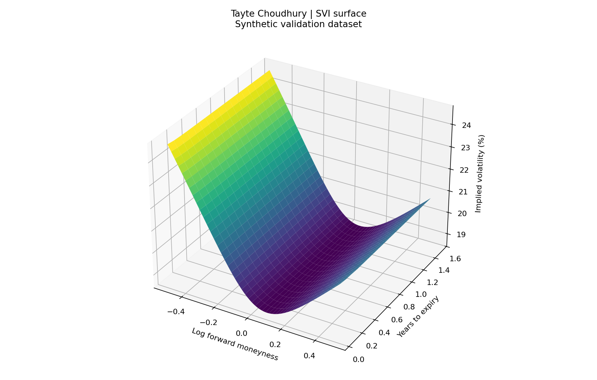
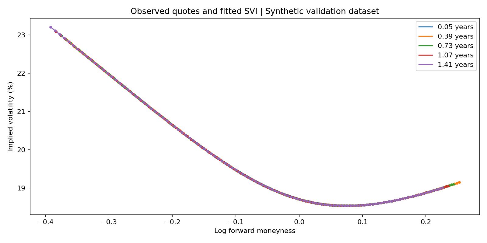

Arbitrage-Free Volatility Surface
I built a pipeline that turns option quotes into volatility smiles, with explicit checks at each step. Here is how I clean the inputs, recover the forwards, and fit the surface.
I use generated option quotes below to validate the implementation. These figures are not historical SPY results. The same pipeline accepts a synchronized market snapshot in the documented CSV format.

Explore an expiry
What I built
I built a pipeline that takes an options snapshot and turns it into a set of calibrated volatility smiles. The surface plot is the visible result, but most of the work is in the steps before it: deciding which quotes to use, estimating the forward, solving for implied volatility, and checking whether the fitted slices are consistent with one another.
I used Python, NumPy, pandas, and SciPy so I could inspect the intermediate values at each step. The script writes a report with the filter counts, forwards, parameter estimates, fitting errors, and arbitrage diagnostics. That makes it possible to trace a strange-looking part of the surface back to the inputs or the fit.
The data behind this version
I am showing a generated validation snapshot here: 4,320 call and put quotes across 18 expiries, with 120 strikes per expiry and an underlying spot of 500. Maturities run from 0.05 to 1.50 years. I use this dataset to check that the numerical pipeline recovers a known construction. It is not the historical SPY dataset described in my resume, and the small fitting errors below should be read in that context.
I require one timestamp and one spot value for a snapshot, reject duplicate contracts, and check the numeric inputs before fitting anything. Mixing quotes from different moments would make the put-call comparisons difficult to interpret even if the optimizer still returned a smooth curve.
How I clean the quotes
I apply the screens in sequence and record how many rows each one removes. For this example, 50 quotes have zero bids and another 15 fail the relative-spread screen. That leaves 4,255 quotes after cleaning. The other screens remove zero rows in this particular snapshot; I keep those counts in the report rather than implying that every filter did something.
| Screen | Quotes removed | Rule |
|---|---|---|
| Zero bids | 50 | Bid must be positive |
| Crossed or locked quotes | 0 | Ask must exceed bid |
| Wide relative spread | 15 | (ask − bid) / midpoint ≤ 30% |
| Short maturity | 0 | At least 7 days |
| Sparse expiry | 0 | At least 6 surviving strikes |
Why I estimate a forward for each expiry
I pair calls and puts at the same strike and maturity, then regress their midpoint-price difference on strike. In the relation C − P = D(F − K), the slope gives me −D and the intercept gives me DF. From those two numbers I recover a discount factor and a forward for each slice.
In this validation run, the recovered forward rises from about 500.625 to 519.106, while the discount factor falls from about 0.9980 to 0.9418. I use those forwards in Black-76 and express the smile in log-forward-moneyness, log(K/F), so I am not treating the spot price as the forward for every maturity.
I then keep out-of-the-money calls and puts and solve for the volatility that reproduces each midpoint price. I use Brent’s method with a 1e-6 solver tolerance and a bracket from 1e-6 to 5 in volatility units. Prices outside the invertible bounds are counted and discarded. This run fits 2,095 OTM quotes and has zero inversion failures after selection.
How I constrain the SVI fit
Each slice has five parameters: a, b, ρ, m, and σ. They control the level, slope, skew, location, and curvature of total implied variance. I fit total variance rather than volatility directly and use SLSQP to keep the candidate parameters inside the constraints.
I check positive total variance, the wing-slope bounds, the Durrleman butterfly-density condition, and calendar monotonicity relative to the previous expiry. The density and calendar checks use 2,000 points from log-moneyness −1 to +1. The lowest checked density in this run is 0.3979, and the smallest adjacent-slice total-variance gap is 0.002931; both remain positive on that grid.
That is a useful numerical check, but it is still a finite grid. I am not claiming a proof that every possible strike between or beyond those points is arbitrage-free. I also have not added an American-exercise adjustment, so applying the same pricing assumptions to an American-style chain would require more care.
The full calibration results
I included every expiry below so the quality of the fit is visible across the surface. “Vol points” means percentage points of volatility: a move from 20% to 21% is one vol point. The largest slice RMSE is about 0.001682 vol points in this synthetic test.
| Expiry (years) | Forward | OTM quotes | RMSE (vol points) | Minimum density |
|---|---|---|---|---|
| 0.050 | 500.625 | 63 | 0.001018 | 0.4081 |
| 0.135 | 501.694 | 112 | 0.001682 | 0.4101 |
| 0.221 | 502.765 | 120 | 0.001268 | 0.4108 |
| 0.306 | 503.838 | 120 | 0.000339 | 0.4111 |
| 0.391 | 504.914 | 120 | 0.000293 | 0.4103 |
| 0.476 | 505.991 | 120 | 0.000229 | 0.4094 |
| 0.562 | 507.072 | 120 | 0.000168 | 0.4085 |
| 0.647 | 508.154 | 120 | 0.000151 | 0.4076 |
| 0.732 | 509.239 | 120 | 0.000159 | 0.4066 |
| 0.818 | 510.326 | 120 | 0.000144 | 0.4057 |
| 0.903 | 511.415 | 120 | 0.000130 | 0.4047 |
| 0.988 | 512.507 | 120 | 0.000110 | 0.4038 |
| 1.074 | 513.601 | 120 | 0.000108 | 0.4028 |
| 1.159 | 514.697 | 120 | 0.000100 | 0.4018 |
| 1.244 | 515.796 | 120 | 0.000093 | 0.4009 |
| 1.329 | 516.897 | 120 | 0.000088 | 0.3999 |
| 1.415 | 518.000 | 120 | 0.000083 | 0.3989 |
| 1.500 | 519.106 | 120 | 0.000077 | 0.3979 |
What this validates, and what comes next
I checked put-call parity, recovered known volatilities through inversion, tested rejection of invalid prices and mixed snapshots, and compared the analytical density expression with numerical derivatives. Those checks support the implementation. They do not measure how well it handles a real market with stale quotes, dividends, exercise effects, and inconsistent prices.
My next step would be to run the same reporting pipeline on a properly timestamped market snapshot and inspect the residuals expiry by expiry. I would also widen the arbitrage checks and test sensitivity to the liquidity thresholds. The point of keeping the intermediate data is that I can change those assumptions and see exactly what moved.
